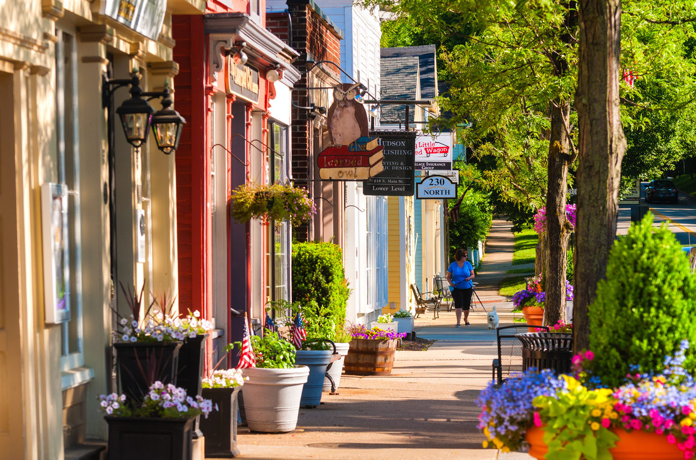

Orange County
Community Board
Community Board
Orange County, nestled in the heart of California, is a vibrant and diverse region known for its captivating blend of natural beauty and urban sophistication.
With its sun-kissed beaches, rolling hills, and picturesque landscapes, Orange County offers a haven for outdoor enthusiasts and seekers of relaxation alike. Boasting a rich cultural tapestry, it hosts an array of art galleries, museums, and entertainment venues. The county's communities embrace a spirit of togetherness, fostering a sense of belonging and shared experiences among its residents. From its thriving economy to its warm and welcoming atmosphere, Orange County stands as a dynamic and inviting destination.
This website is for our neighbors to share events, recommendations, advices, and much more!
Join Us
Join our community and stay updated with the latest events and news.